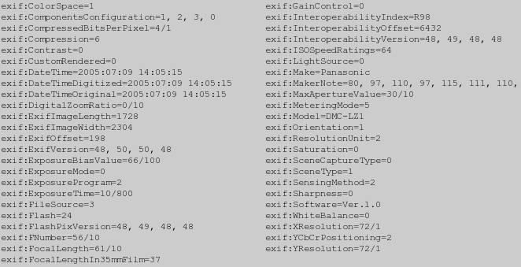
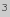
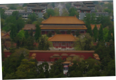
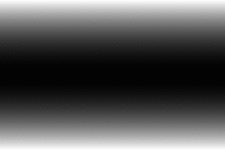
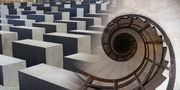
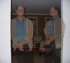
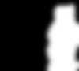

ImageMagick Examples --
 Digital Photo Handling
Digital Photo Handling
- Index
-
 ImageMagick Examples Preface and Index
ImageMagick Examples Preface and Index
-
 Digital Camera Meta-Data, the EXIF Profile
Digital Camera Meta-Data, the EXIF Profile
-
Digital Photo Orientation
-
Color Improvements
- Brightening Under-exposed Photos
- Binning - Reducing Digital Noise (Under Construction)
-
Photo Conversion Cookbook
- Minor Rotation Correction - fix a photo that is not quite level
- Tilt-Shift Effect - make scenery look like an artificial model
- PNG-JPEG Layered Images - compressing pages while keeping text sharp
- Overlapping Photos - blurred overlaps of appended photos
- Double Exposures - mixing multiple photos of the same scene
- Protect Someone's Anonymity - fuzzing out some part of a photo
- Add a Texture to an Image
- Chroma Key Masking - Modifying by areas of specific color
- Children's Color-In Images
- Pencil Sketch
- Vignette Removal
Digital Camera Meta-Data, the EXIF Profile
When a digital camera takes a photo, it also includes a lot of extra information in the JPEG save file. This meta-data is known as the EXIF profile, and is provided specifically for photographic labs and development. The ImageMagick "magick identify" with a "-verbose" setting will display this Exif information. Here is the EXIF data of a photo I took of a Pagoda, Kunming Zoo, in Southern China.
|
|  |
The EXIF data, or any identify output, should be processed in a case in-sensitive way. Many older versions of IM for example, will output "EXIF:" (uppercase) rather than "exif:" (lowercase). |
|
![[IM Text]](pagoda_sm_time.txt.gif)
|
- My camera is a Panasonic ('
Make'), DMC-LZ1 ('Model') - The camera was rotated ('
Orientation'). But I must have corrected that rotation without adjusting the EXIF data. The camera was also tilted upward slightly, but that info is not recorded. - The '
FocalLength' of '37mmshows that I did not make use of my cameras 'Optical Zoom' feature. My camera could go up to a 6X optical zoom for a 'FocalLength' of '366/10' or '222mm'. - And '
DigitalZoomRatio' shows I did not digitally zoom either. - The camera also used a fast 1/8 second '
ExposureTime', and an aperture 'MaxApertureValue' of 3mm, or 'FNumber' of '5.6' and a 'ISOSpeedRating' of '64'. - The flash ('
LightSource') was not used. - The original image was 1728 by 2304 pixels ('
ExifImageLength' and 'ExifImageWidth'). Though the actual image, if you like to check is smaller, so I must have cropped and/or resized it. - And probably most importantly, it was taken around 14:05pm on 9th of July 2005, according to the '
DateTime' string. That assumes that I had the cameras time set correctly (which I did). - More modern cameras may even have a GPS location and posibily a compass direction of the view!
Digital Photo Orientation
I have been told that Photoshop will automatically rotate digital images based on the EXIF 'Orientation' setting, IM will also do this by including a "-auto-orient" operator, after reading in the image. However, and this is important
JPEG Format is Lossy
What this means is that any time you decode and save the JPEG file format you will degrade the image slightly. As a general image processor, IM will always completely decode and re-encode the format, as such it will always degrade JPEG images when it re-saves the image. For more information on the nature of the JPEG format see JPEG Image File Format. The point is to only use IM to correct digital photo orientation (using "-auto-orient") when you are also performing other image modifying operations, such as Thumbnail Creation, Annotating Images, Watermarking or even Exposure Adjustments. IM can extract the current orientation (as a number) from the photo using an Image Property Escape...
|
![[IM Text]](orient_show.txt.gif)
|
-orient" operator (use "-list orientation" to see possible values).
|
 |
Top-Left' or 1. Of course you should not remove the EXIF meta-data (using either "-strip" or "-thumbnail"), if you plan to use "-auto-orient" later in the image processing. Use it before stripping the image meta-data. If you do want to correct the orientation of your photo, without degrading or otherwise modifying your image, I suggest you use the JHead program. For example here I correct a photos orientation, and delete the built-in preview thumbnail all the digital photos in a directory.
jhead -autorot *.jpg |
| The JPEG lossless rotation will only work correctly for images that have a size that is divisible by 8 or 16. This is true with most (but not all) digital camera photos. If you try this with an image that is an odd size the right or bottom edge blocks (containing the partial size) will not be positioned correctly in the final image, as these block can only exist on the right or bottom edge. For an example of this see this specific discussion |
jpegtrans", or IM "-rotate", and then either reset the EXIF orientation setting (using JHead or the IM "-orient" operator), or just strip the EXIF profile.
Other IM Lossy Modifications...
If you are also resizing or otherwise modifying the image, such as reducing
its quality and size for use on the web, then data loss is already a fact.
As such during those operations IM can do similar things, allowing you to do
all the required operations in a single 'load-save' cycle.
Rotate ALL images to landscape -rotate 90\<
portrait -rotate -90\>
Color Improvements
Before proceeding, it is recommended that you first look at Color Modifications for an introduction to general color modification techniques that will be used. Normalizing (using "-normalize") high-contrast line art and graphics can be great. But normalized photos may look unreal, and, as was said earlier, may not print well either. The "-contrast-stretch" operator can limit the "boundaries" of the normalization, but the "-levels" and/or "-sigmoidal-contrast" operator can make "smoother" adjustments (see Histogram Adjustments for a lower level discussion of what these operators do). The above input is courtesy of "Tong" form the IM Mailing List.
Brightening Under-exposed Photos Contributed by Walter Dnes
Sometimes there simply isn't enough available light to allow for a proper exposure. At other times, you may have to use shorter exposure times than optimal, in order to eliminate motion-blur. Underexposed digital photos can have darker areas preferentially brightened, without blowing highlights, by using the "-sigmoidal-contrast" operator, with a '0%' threshold level. See Sigmoidal Non-linearity Contrast for more details. Here is a minor underexposure example, which was taken at a free concert after sunset. This has lots of brightly lit areas, which are clear, but also dark areas I would like to make more visible.
![[IM Output]](../img_photos/night_club_orig.jpg)
{kind=link}
| As always, you should use a non-lossy format like TIFF or PNG for intermediate work. The JPEG format is only used here to reduce disk space and download bandwidth for web publishing. Select image to see the enlarged version actually used by the examples rather than the small thumbnail shown. |
magick night_scape_orig.jpg -sigmoidal-contrast 10,0% night_scape_fixed.jpg |
![[IM Output]](../img_photos/night_scape_orig.jpg)
![[IM Output]](night_scape_fixed.jpg)
Binning -- Reducing Digital Noise Contributed by Walter Dnes
A lot of serious photographers are unhappy with the side-effects of the "megapixel race" by digital camera manufacturers. Manufacturers pack more megapixels into a digital camera's sensor by making them smaller. Smaller pixels result in a noisier picture at the same ISO setting, which forces people to use lower ISO settings. Using lower ISO ratings to avoid noise requires longer exposure times. This, in turn, means that most consumer digital cameras are effectively useless indoors beyond the 10-foot range of their built-in flash for anything except a still-life picture taken with the camera on a tripod. Many digital camera users would gladly trade some pixels for less noisy pictures at higher ISO settings, but the marketeers who control the companies refuse to consider this as an option. Fortunately, the trade-off can be done after the fact on digital photos. The technical term is 'binning'. The simplified theory goes like so...- Take an n-by-n grid of pixels, and average their components to obtain one "super-pixel".
- Signal is proportional to the combined pixel area, which means that the amount of signal has increased by a factor of n^2
- Noise is random. Which means that it is proportional to the square root of the combined pixel area, a factor of n. The net result is that SNR (signal-to-noise ratio) has increased by a factor of n. See Photo Glossary, Binning for more details.
| In order to make use of binning, the photo image must be a whole number multiple of the final desired size. |
-filter" setting 'box' will average groups of pixels down to a single pixel when you "-resize" an image (See Resampling Filters for details. This means that to do a 'binning' you only need to resize the image correctly.

Photo Conversion Cookbook
Minor Rotation Correction -- Make a photo more level
Typical situation. You have taken a photo, but the image isn't level, and you want to correct it.![[IM Output]](../img_photos/beijing_md.jpg) For example, here is a photo I took using a hand held camera in Beijing, 2008, from the hill in Jingshan Park, immediately behind the Forbidden City. No it isn't of the Forbidden City itself, but a temple on the other side of the hill. Click on the thumbnail, to see a larger image. Yes the image is small, and you should apply the solution to the original image not a small thumbnail, but the techniques is the same for any image. In this case the image needs to be rotated by -1.8 degrees, to correct it.
For example, here is a photo I took using a hand held camera in Beijing, 2008, from the hill in Jingshan Park, immediately behind the Forbidden City. No it isn't of the Forbidden City itself, but a temple on the other side of the hill. Click on the thumbnail, to see a larger image. Yes the image is small, and you should apply the solution to the original image not a small thumbnail, but the techniques is the same for any image. In this case the image needs to be rotated by -1.8 degrees, to correct it.
Now if you just simply rotate the image you will get a slightly larger image containing areas of color in the corners, making the correction look obvious and horible.
|
 |
{kind=link}
The better solution is to not only rotate the image, but scale it slightly so as to produce a rotated image that is the same size as the original.
|
![[IM Output]](beijing_rot_correction.png)
|
Tilt-Shift Effect -- make scenery look like an artificial model
The 'Tilt-Shift' is a technique which causes an image be be blurred at the top and bottom, while leaving the center of the image unblurred. It was originally done in very old bellow type cameras where the lens was tilted to bring the top and bottom of the image out of focus. Thanks of the introduction of Variable Blur Mapping, added to ImageMagick in v6.5.4-0 this is now easy to do. If you add to this a very high contrast so as to enhance shadows, and saturate the colors, a typical result is that a normal image can be made to look artificial. Almost as if you were taking a photo of a small, highly detailed, and brightly lit, model.
The first thing we need to do, is enhance the colors in the image to give it a very high contrast, and perhaps brighten it a bit to make it look like it is very well lit with strong studio lights.
|
![[IM Output]](beijing_contrast.jpg)
|
15' is a very very strong contrast. I also brightened the image a bit by offsetting the center of the contrast threshold to a '30%' gray value. If the colors of the contrast enhanced image does not come out cartoonish enough, you may like to try increasing the color saturation of the image, using the Modulate Operator. This image did not need it as it as the tiled roof and bright green trees already provides enough color effects. If you look at an enlargement of the image (Click on the thumbnail), you will see that even just enhancing colors gives the image a feel of artificial lights, though it does not look like a model, with too much detail to the cars in the background, and people in the foreground.
Now for the tilt-shift. For this we prepare a gradient image that is white at the top and bottom, and black in the middle. Some people might use a linear gradient for this, but I find a parabolic gradient better.
|
 |
{kind=link}
magick beijing_contrast.jpg beijing_blurmap.jpg \
-compose Blur -set option:compose:args 10 -composite \
beijing_model.jpg
|
![[IM Output]](beijing_model.jpg)
magick beijing_md.jpg -sigmoidal-contrast 15x30% \
\( +clone -sparse-color Barycentric '0,0 black 0,%h gray80' \
-solarize 50% -level 50%,0 \) \
-compose Blur -set option:compose:args 10 -composite \
beijing_model.jpg
|
Speed Optimization
The Variable Blur Mapping operation is essentually using a single pass 2-dimentional blurring method (equivelent to an uniform Gaussaian Blur). However you can get a general speed boost by doing the bluring operation in two 1-dimensional variable blur operations. For example, here I first blur horizontaly, the vertially...
magick beijing_md.jpg -sigmoidal-contrast 15x30% \
\( +clone -sparse-color Barycentric '0,0 black 0,%h gray80' \
-solarize 50% -level 50%,0 -write mpr:blur_map \) \
-compose Blur -set option:compose:args 10x0 -composite \
mpr:blur_map \
-compose Blur -set option:compose:args 0x10 -composite \
beijing_model_2pass.jpg
|
Problems with Tilt-Shift Effect vs A Real Model
If you examine the resulting photo carefully, you will be able to tell it is a fake tilt-shift, and not a photo of a real model. You can see this in that the roof of the larger building is too blurry when compared to the base of the building. Even though it is about the same distance as the base. Similarly the base of the 'wall' is more blurry than the top of the wall. That is, it can be seen to be a fake. The problem is that large vertical objects, should be blurred by the same amount over the whole surface, and not just variably blurred by height. Remember the blur gradient is meant to represent the focal depth, or distance of the various objects in the image, as such the surface of a vertical object should all be the same 'distance' and thus blurred by the same amount. To fix I would need to adjust the blur gradient to make those areas have a with a constant (or near constant) color of the 'base' of that object, relative to rest of the image. That is, vertical surfaces have a constant blur amount while all the horizontal surfaces have a blur gradient. Basically the blurred gradient should represent the actual 'depth' of each point in the image, which for most images is a very complex gradient. This adjustment can be difficult to achieve, as it most likely requires some human interpretation of what is a horizontal wall and how far the object is in the image. It is also unlikely to be easily automated. What can you do with this effect? Mail me your tilt-shift images! I'll reference them here. Or perhaps you can correct the tilt-shift faults in the above example.PNG-JPEG Layered Images
By separating a large newspaper or magazine page into a text layer that is saved as a PNG, and an image layer saved as JPG, both using just a white background, it is possible to use much less disk space than the two images combined! More importantally images can use a lossy compression (JPEG), the text components will remain sharp an clear (PNG). It sounds silly and weird but it is actually true. The separated images can save 3 to 4 times the disk space used by a single combined image. Usually the two images are generated during the publication process as separate layers. But you can also separate images after the fact too. The images are just overlayed together...
magick ny_family.jpg ny_family.png -composite ny_family_merged.jpg |
![[IM Output]](../img_photos/ny_family.jpg)
![[IM Output]](../img_photos/ny_family.png)
![[IM Output]](ny_family_merged.jpg)
Select the resulting images to see a larger copy.
Overlapping Photos -- blurred overlaps of appended photos
Creating a series of overlapping photos (and I don't mean a panarama) is a common task, especially in web site creation. But is can be tricky to do unless you have the right knowledge of IM operators. The simplest method is to use a Masked Composite of the two images, and a mask to select which image to overlay. First however you need to do simple mathematics. For this example, I am using two thumbnail images 120x90 pixels in size and I want to overlap them horizontally by 40 pixels. This means the resulting image should be 120 + 120 - 40 pixels wide, or a 200x90 pixel image. Next we need a mask. This needs to black one one side, white on the other, with a 40 pixel gradient in the middle, the size of the final output image. That is, 120 pixels - 40 pixel gives an 80 pixel area for each of the two non-overlapped areas. So lets generate a masking image...
|
![[IM Output]](overlap_mask.png)
|
plmlut" horizontal gradient generator script. This has finer controls for the curvature of the gradient rather than a sharp linear gradient I generate above. Now that all of the math is out of the way, all that is left is to do a three image masked composition, using the mask we just generated. However we will also need to enlarge the destination (left) image so as to provide enough space for the overlapping right image (any color), and position the second image correctly using the appropriate gravity (right, or 'East').
magick holocaust_tn.gif -extent 200x90 spiral_stairs_tn.gif \
overlap_mask.png -gravity East -composite overlap_photos.jpg
|
![[IM Output]](../img_photos/holocaust_tn.gif)
![[IM Output]](../img_photos/spiral_stairs_tn.gif)
{kind=link}
|
 |
{kind=link}
magick -size 90x90 xc:white -size 90x30 gradient: -append -rotate 90 \
hatching_tn.gif \
\( chinese_chess_tn.gif -clone 0 \
-compose CopyOpacity -alpha off -composite -repage +90+0 \) \
\( holocaust_tn.gif -clone 0 \
-compose CopyOpacity -alpha off -composite -repage +180+0 \) \
\( spiral_stairs_tn.gif -clone 0 \
-compose CopyOpacity -alpha off -composite -repage +270+0 \) \
-delete 0 -compose Over -mosaic overlap_series.jpg
|
{kind=link}
ASIDE: It may be that doing the composition in a different colorspace may work better. Anyone like to experiment and report on your results, good or bad?
Double Exposures -- mixing multiple photos of the same scene
With old time film based cameras, there was a technique where a picture was take two or more times without 'rolling' the film. This allowed you to create what was known as double exposures, where two images taken at slightly different times were merged together. The result was often a ghosting or dimming of parts of the image which moved or changed. However with careful control of the subjects in the image, the lighting effects, and even the development process, it became possible to make some very weird or even 'impossible' photos. With digital images it is even easier as you have even better control of the images. Basically... Seeing may be believing, but cameras lie! For example suppose I wanted an image in which I appear in twice! Well that is easy to do. Here for example are the thumbnails of two quick photos I took specifically for this example, using a tripod and timer, which I'll use directly.![[IM Output]](../img_photos/anthony_1.jpg)
![[IM Output]](../img_photos/anthony_2.jpg)
Perhaps you can supply a better more amusing photo set?
|
 |
{kind=link}
|
![[IM Output]](anthony_mask.jpg)
|
|
![[IM Output]](anthony_doubled.jpg)
|
|
![[IM Output]](anthony_removed.jpg)
|
With a clean background photo, we we can threshold a difference image to mask out the parts of the image that changed. You may need to use some further blurring and threshold to expand that mask appropriately to cover not only the object within the image, but any shadows or reflections it may cast on the background scenery. A little trial and error may also be needed to get it right.
|
 |
{kind=link}
|
![[IM Output]](anthony_haunted.jpg)
|
![[IM Output]](../img_photos/jacob_vs_jacob_md.jpg)
Jacob vs Jacob
Protect Someone's Anonymity -- fuzzing out some part of a photo
The above technique of using a 3 image composite mask can also be used in other ways. For example you can 'pixelate' and image, then use a mask to limit the effect to just the face of a person, so as to "Protect their Identity".
magick zelda_tn.gif -scale 25% -scale 400% zelda_pixelate.gif
magick zelda_tn.gif -gamma 0 -fill white \
-draw 'circle 65,53 50,40' zelda_face_mask.gif
magick zelda_tn.gif zelda_pixelate.gif zelda_face_mask.gif \
-composite zelda_anonymity.png
|
![[IM Output]](../img_photos/zelda_tn.gif)
{kind=link}
![[IM Output]](zelda_anonymity.png)
|
![[IM Output]](zelda_anonymity.jpg)
|
-scale" operators with a single "-blur" to fuzz out the details. This technique replacing a masked area can also be used to remove unwanted text and logos from images. For details see Hole Filling.
Add a Texture to an Image
The Hardlight alpha compositing method or even any of the various Lighting Composition Methods provide ways to give an image a texture pattern. For example, here I add a texture of course fabric to a photo I took of a pagoda at the Kunming Zoo, in southern China.
magick tile_fabric.gif -colorspace gray -normalize \
-fill gray50 +level 35% texture_fabric.gif
magick composite texture_fabric.gif pagoda_sm.jpg \
-tile -compose Hardlight photo_texture.jpg
|
![[IM Output]](../images/tile_fabric.gif)
![[IM Output]](texture_fabric.gif)
![[IM Output]](photo_texture.jpg)
magick composite" command rather than the more versatile "magick" command, though there are a number of other ways to Tile Images in Memory using convert. Also note that when adding a texture like this, the smaller details in the original photo can be lost by excess noise of the overlaid texture, textures should ge hept either simple, or their effect appropriatally moderated, such as the Decontrasting Level Adjustment used above. To use an image pattern as a texture it should be modified so that a perfect gray color is used for areas that is unchanged in the original image. That is the average color of the image should be about 50% gray. In the example I demonstrate one way that you can do this with just about any tileable image, though this specific method may not always work well. Such textures can be found all over the web, as various background patterns for web pages. They may not even look like a texture, be colorful, or even very bright or very dark. After adjustment however you will find that you can get some very interesting effects. Just as we did previously, you can limit what parts of an image is actually textured by creating an appropriate mask. For example lets create a mask of just the near 'white' sky in the pagoda photo.
magick pagoda_sm.jpg -fuzz 10% -transparent white \
-alpha extract -negate pagoda_mask.png
magick pagoda_sm.jpg photo_texture.jpg pagoda_mask.png \
-composite photo_texture_masked.jpg
|
{kind=link}
{kind=link}
![[IM Output]](../img_photos/shirt.jpg)
Chroma Key Masking -- Modifying by areas of specific color
The photo to the left was given by an user in a IM Forum Discussion. he wanted to change the color of the girls shirt, which was a nice 'pink' color. The problem is the color is not just 'pink' but a whole range of different shades of 'pink'. As you have seen above, to make changed to an image, the first step is typically generating an appropriate mask of the area you are interested in. Here I will use a technique known as Chroma Key to generate mask that specific color. This technique generally looks for a specific color in an image for use as the mask. It is also the technique used for 'blue' and 'green' screen effects used extensively on TV and in Movies.This basically involves extracting the 'Hue' by Separating Channel Images, then looking up the 'hue shade' wanted. For example...
|
![[IM Output]](shirt_hue.jpg)
|
So lest extract and combine the two channel masks. Note that Hue = Gray64 after the image hues was 'rolled' using module, and Saturated = Black for the grey background.
-morphology Smooth Square). It isn't perfect but it will do the job. The better way would be to edit the mask by hand to clean it up. Now a mask can be used with Composite Masking much like we did with Double Exposures and Anonymity examples above. However If you are using a mask to modify an existing image (without distorting, or changing the images size), then it is easier to use it to define what areas are un-writable. These are known as Clip or Write Masks (see "-mask"
|
![[IM Output]](shirt_mask.png)
|
Here I cleanup the previous mask of the small defects (optional), and negate it to define what areas I want to 'write protect'. Then I set this mask, shift the hues to turn 'pink' into a 'light blue' color, and save the resulting image.
|
![[IM Output]](shirt_blue.jpg)
|
Green Screen
Future example, using Chroma Key Masking of a 'green screen background'. Expanded from the wikipedia artical, Chroma KeyReal problems in 'green screen' handling is the 'color spill', with fine light color hair (blonde) and semi-transparent areas producing the worse color spill effects.
Simplistic Colorspill removal (color fix)
g(r,g,b) => (r, min(g, b), b)
a(r,b,g) => K0 * b − K1 * g + K2
As the Background color is well known, and once the 'alpha' is known you can use techniques shown in Background Removal using Two Backgrounds to remove any 'green screen halo' that may be present better that the first color formula.
Artist Charcoal Sketch of Image
The Charcoal Sketch Transform, offers users a very simple way of generating a simplified gray-scale rendering of the image. It does not work well for 'busy images' but for simpler images it can produce a very striking result.{kind=link}
Children's Color-In Outline Image
In a long discussion about Generating Coloring-In Pages on the IM Users Forum, the following cookbook recipe was developed to magick a simple photo into something children can color in. Here is the best result we have so far, applied to a photo I took of the holocaust memorial, Berlin.
magick holocaust_sm.jpg \
-edge 1 -negate -normalize \
-colorspace Gray -blur 0x.5 -contrast-stretch 0x50% \
color-in.gif
# For heavily shaded pictures...
# #-segment 1x1 +dither -colors 2 -edge 1 -negate -normalize \
|
![[IM Output]](../img_photos/holocaust_sm.jpg)
{kind=link}
-edge" to outline the colored areas.
magick piglet.gif -background white -flatten \
-colorspace Gray -negate -edge 1 -negate -normalize \
-threshold 50% -despeckle \
-blur 0x.5 -contrast-stretch 0x50% \
color-in_cartoon.gif
|
![[IM Output]](../images/piglet.gif)
![[IM Output]](color-in_cartoon.gif)
-threshold" so I can then remove individual dots that "-edge" seem to like to generate. After that I again attempt to smooth out the aliased lines in the image. The above was added to in a discussion on GIMP Photocopy Filter to make use of the Compose Divide method, to find outlines.
magick taj_mahal_sm.png -colorspace gray \
\( +clone -blur 0x2 \) +swap -compose divide -composite \
-linear-stretch 5%x0% photocopy.png
|
![[IM Output]](../img_photos/taj_mahal_sm.png)
{kind=link}
-linear-stretch" operation in the above adjusts how black the dark areas of the images will be, while the "-blur" 'sigma' defines the shading sharpness.
Pencil Sketch
Using a Photoshop (PSP) tutorial on converting images to Pencil Sketches, dognose from the IM Users Forum, managed to create the equivalent ImageMagick commands. Here is his conversion, simplified into a few IM commands, allowing you to batch process lots of images into a 'artists pencil sketch' form. First we need a special "pencil.gif" image. This can take a long time, so for this example I made it a bit smaller, while preserving its ability to be tiled across larger images. See Modifying Tile Images for details of the techniques.
This only needs to be done once and can then be re-used. As such you can generate a much larger one for your own use, so as to avoid any tiling effects. Ideally make it as large as the images you plan to convert.
|
![[IM Output]](pencil_tile.gif)
|
magick pagoda_sm.jpg -colorspace gray \
\( +clone -tile pencil_tile.gif -draw "color 0,0 reset" \
+clone +swap -compose color_dodge -composite \) \
-fx 'u*.2+v*.8' sketch.gif
|
![[IM Output]](../img_photos/pagoda_sm.jpg)
{kind=link}
-blend" operator of the "composite" command is not available to the "magick" command, I opted to do the equivalent using the DIY "-fx" operator. There are probably better, faster but more complicated ways of doing this. (suggestions are welcome) This is not the final version, as the operator misses some edge enhancement aspects needed for outline some of the more lighter but sharp color changes in the image. Can you improve the above? The above algorithm was built into IM as an artistic transform "-sketch", though without the "-resize" smoothing for the generated 'pencil tile'...
|
![[IM Output]](sketch_new.gif)
Vignette Removal
When taking photos (digital or otherwise, the camera lens generally darkens the edges and corners of the image. This is called 'vignetting'. In fact this lens effect is so common, it is often faked on purpose using the "-vignette" operator. See the Vignette Transform. Martin Herrmann <Martin-Herrmann@gmx.de> wanted to remove camera vignetting from the photos. Basically he took a photo of a white sheet of paper in a bright light without using a flash. He then wanted to combine this with his actual photos to brighten the edges and corners of the image appropriately. Basically what we want to do is divide the original photo by the grey-scale image of the photo of the brightly lit white piece of paper and it will then brighten the parts of the image by the amount that the 'white paper' photo was darkened. This is basically the compose method 'Divide' which divides the 'source' image by the 'background' image. For example,
magick nikon18-70dx_18mm_f3.5.jpg vegas_orig.jpg \
-compose Divide -composite vegas_fixed.jpg
|
![[photo]](../img_photos/vegas_orig.jpg)
![[photo]](../img_photos/nikon18-70dx_18mm_f3.5.jpg)
![[photo]](vegas_fixed.jpg)
(click to see larger photo image)
|
![[photo]](../img_photos/vegas_fixed_fx.jpg)
|
- Distance of film from lens, further away means more light spread.
- Area of the aperture 'circle' (lens or pinhole) due to angle of light.
- Arrangement of camera material around the aperture. For example the lens holder or pinhole thickness.